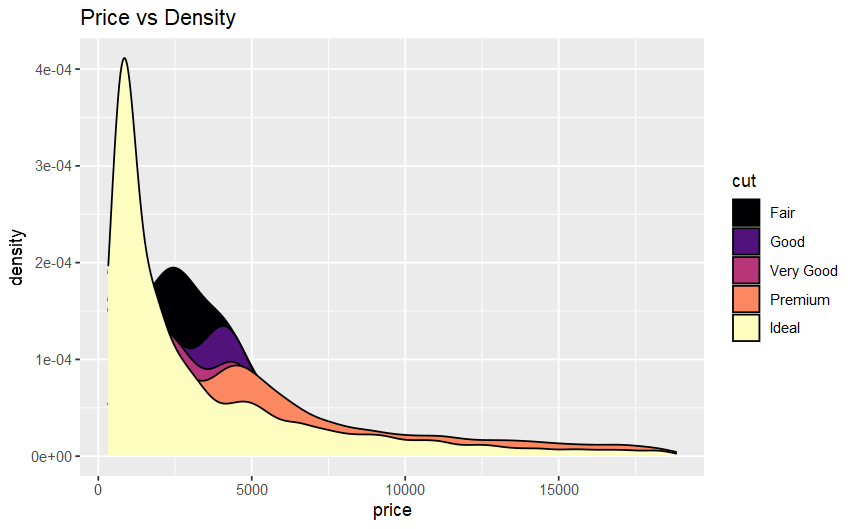
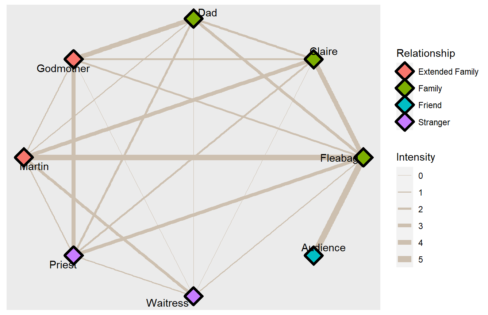
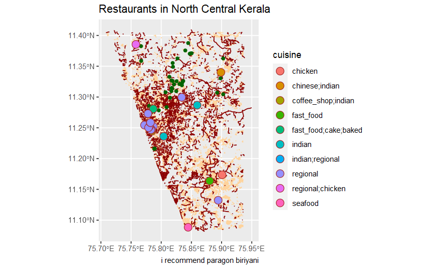

Hi! I am Arunima Sajith. I’m someone who had never even thought to learn coding before this class. And within two weeks of this workshop I think I’ve grown significantly. These are some of my favorite pieces of work I’ve made during this time period.
Plotting the price of diamonds against density. I love the colors in this one (it took me hours to get.
ggplot(diamonds) + geom_density(aes(x = price, fill = cut)) + labs(title = "Price vs Density") + scale_fill_viridis_d(option = "magma")
# Relationship analysis of characters in the TV show Fleabag. (Note: the dataset was made based only on S2E1)
#
ggraph(graph = fb, layout = "circle") +
geom_edge_link(aes(width = Intensity), colour= "antiquewhite3") + scale_edge_width(range = c(0, 3)) +
geom_node_point(aes(fill = Relationship), shape = 23,
size = 5.5,
stroke = 2 ) +
geom_node_text(aes(label = Name), repel = TRUE, color = "black")+
labs(title = "Intensity")
Restaurants in my hometown mapped according to cuisine and location.
buildings <- st_read("data/buildings.gpkg")## Reading layer `buildings' from data source
## `G:\My Drive\R work\MyWebsites\DTT-2022-2023\content\portfolio\arunima-sajith\data\buildings.gpkg' using driver `GPKG'
## Simple feature collection with 20916 features and 175 fields
## Geometry type: POLYGON
## Dimension: XY
## Bounding box: xmin: 75.7086 ymin: 11.08489 xmax: 75.9363 ymax: 11.40523
## Geodetic CRS: WGS 84parks <- st_read("data/parks.gpkg")## Reading layer `parks' from data source
## `G:\My Drive\R work\MyWebsites\DTT-2022-2023\content\portfolio\arunima-sajith\data\parks.gpkg' using driver `GPKG'
## Simple feature collection with 32 features and 12 fields
## Geometry type: POLYGON
## Dimension: XY
## Bounding box: xmin: 75.71902 ymin: 11.12213 xmax: 75.93479 ymax: 11.38537
## Geodetic CRS: WGS 84greenery <- st_read("data/greenery.gpkg")## Reading layer `greenery' from data source
## `G:\My Drive\R work\MyWebsites\DTT-2022-2023\content\portfolio\arunima-sajith\data\greenery.gpkg' using driver `GPKG'
## Simple feature collection with 35 features and 3 fields
## Geometry type: POLYGON
## Dimension: XY
## Bounding box: xmin: 75.76366 ymin: 11.08904 xmax: 75.93426 ymax: 11.31107
## Geodetic CRS: WGS 84trees <- st_read("data/trees.gpkg")## Reading layer `trees' from data source
## `G:\My Drive\R work\MyWebsites\DTT-2022-2023\content\portfolio\arunima-sajith\data\trees.gpkg' using driver `GPKG'
## Simple feature collection with 39 features and 4 fields
## Geometry type: POINT
## Dimension: XY
## Bounding box: xmin: 75.76654 ymin: 11.21588 xmax: 75.90273 ymax: 11.38763
## Geodetic CRS: WGS 84roads <- st_read("data/roads.gpkg")## Reading layer `roads' from data source
## `G:\My Drive\R work\MyWebsites\DTT-2022-2023\content\portfolio\arunima-sajith\data\roads.gpkg' using driver `GPKG'
## Simple feature collection with 5049 features and 30 fields
## Geometry type: LINESTRING
## Dimension: XY
## Bounding box: xmin: 75.70855 ymin: 11.08201 xmax: 75.94973 ymax: 11.40959
## Geodetic CRS: WGS 84restaurants <- st_read("data/restaurants.gpkg") # Added by Arvind## Reading layer `restaurants' from data source
## `G:\My Drive\R work\MyWebsites\DTT-2022-2023\content\portfolio\arunima-sajith\data\restaurants.gpkg' using driver `GPKG'
## Simple feature collection with 581 features and 32 fields
## Geometry type: POINT
## Dimension: XY
## Bounding box: xmin: 75.74745 ymin: 11.08839 xmax: 75.91931 ymax: 11.39355
## Geodetic CRS: WGS 84ggplot() +
geom_sf(data = buildings, colour = "burlywood1") +
geom_sf(data = roads, colour = "darkred") +
geom_sf(data = trees, colour = "darkgreen") +
geom_sf(
data = restaurants %>% drop_na(cuisine), # dat_R removed by Arvind
aes(fill = cuisine),
colour = "brown",
shape = 21,
size = 4) +
theme(legend.position = "right") +
labs(title = "Restaurants in North Central Kerala",
caption = "i recommend paragon biriyani")
RStudio is not easy to work with when you’re a beginner. But I think the environment we were in and the facilitator we had made it a lot easier for us to get a grip on things. Most of my days were filled with cries for help from around the class but it didn’t match the satisfaction I felt when a code I typed gave me a result in the end. I’m very grateful to this class for broadening my horizons on what I consider art and helping me grow as a student.